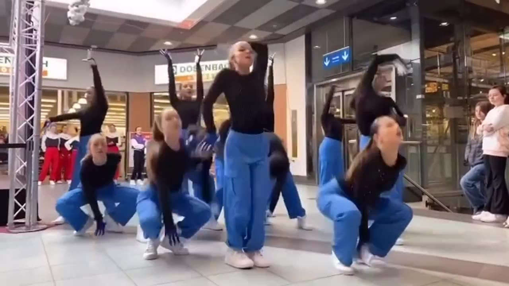

MATRAN CENTRE · SUISSE
SWISS DANCE
CHALLENGEMATRAN CENTRE↗
Rte du Bois, 1753 Matran
EST DE RETOUR.
20 — 30
JANVIER 2027
La danse prend place à Matran.
Découvrir le programmeSHOWS / BATTLES / CHORÉGRAPHIES↓
01 / AU PROGRAMME
LE MOUVEMENT
NOUS RASSEMBLE.
Du 20 au 30 janvier 2027, rendez-vous à Matran Centre pour partager l’énergie de la danse.
BATTLES ADULTES
DANS LE CERCLEBATTLES KIDZ
LA NOUVELLE GÉNÉRATIONCHORÉGRAPHIES
L’ÉNERGIE COLLECTIVE02 / DANCE SHOWS
LES ÉCOLES
À L’HONNEUR.
Découvrez les écoles et les artistes qui font vivre la danse en Suisse.

MARIELA MOBILLA DANSE
École de danse urbaine et contemporaine fondée par Mariela Mobilla, professeure, chorégraphe et danseuse professionnelle. Forte d’une expérience internationale, elle transmet sa passion de la danse à travers des cours accessibles aux enfants dès 4 ans ainsi qu’aux adultes.

RENDEZ-VOUS SUR LE DANCEFLOOR.02 / LE RENDEZ-VOUS
MATRAN
CENTRE.
20 — 30 JANVIER 2027
Des shows, des battles adultes et Kidz, des chorégraphies. Retrouvez le Swiss Dance Challenge à Matran Centre.
Voir l’itinéraire03 / INSCRIPTIONS
PRÊT À ENTRER
DANS LE CERCLE ?
Ouverture des inscriptions
FIN NOVEMBRE
Les modalités d’inscription seront publiées ici à l’ouverture.